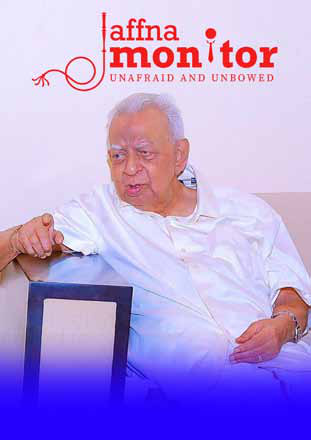

Chavakachcheri Hospital Controversy: A Reflection on Our Values and Future
Chavakachcheri Hospital Controversy: A Reflection on Our Values and Future
Jaffna Monitor hellojaffnamonitor@gmail.com 3 Chavakachcheri Hospital Controversy: A Reflection on Our Values and Future The Chavakachcheri hospital issue has become a focal point, stirring much debate and discussion, particularly on the not-so-content Jaffna YouTube channel, Facebook, and diasporic YouTube channels. At the center of this controversy is Dr. Aruchuchuna, who, in true Tamil fashion, has exaggeratedly linked this issue to the legendary Kurukshetra War from the Mahabharata, subtly stirring the sentiments of the common people. His portrayal of himself as Lord Krishna, evident in his social media posts and narcissistic comments during a television interview, as well as his never-ending Facebook Live sessions, has only added to the sensationalism. Jaffna YouTubers, who have been content-less and producing 'tzf;fk; cwTfNs> ehd; ,g;g gpuhd;]; mz;zh 16 Nfhby fl;bd tPl;Lf;F Kd;dhy epf;fpwd;" (Hello friends, I am standing in front of a house built by France Anna for 16 crores) type of videos, found a newfound adrenaline rush, creating tons of videos, shorts, reels, and whatnot. Our so-called Tamil nationalist politicians, who always seem to be "waiting for someone to die so they can dance," and our diaspora, who thrive on chaos in Jaffna, have all jumped on the bandwagon, making it a big buzz. As a responsible media outlet, the Jaffna Monitor refrains from sensationalizing this issue. Unlike other July 15, 2024 Fortnightly Edition Rs. 500 Sampanthan's Political Journey: From Leader to Disregarded Elder

Jaffna Monitor hellojaffnamonitor@gmail.com 4 platforms that thrive on controversy, our restraint is not due to a lack of interest or concern but stems from a desire to avoid being part of the media frenzy that often obscures the real issues. Therefore, we are choosing not to report on this matter now. We apologize to our readers who may have expected coverage from us, but our approach will help maintain focus on the more significant underlying problems. This unfolding saga has inadvertently shone a spotlight on the notorious practices of the Government Medical Officers' Association (GMOA). Astonishingly, this trade union wields the power to transfer doctors—a responsibility that typically lies with government authorities. Moreover, the GMOA holds the authority to issue tax-free vehicle permits, highlighting their undue influence and power. Their reputation is marred by allegations of thuggery and highhandedness. For instance, Dr. Mayuran, who holds a position within the GMOA, worked at Tellipalai Hospital but traveled to Chavakachcheri Hospital during his duty time and attacked Dr. Archchuna. This incident vividly illustrates that the GMOA is more than just a trade union; it operates like a group of thugs. Additionally, this saga sheds light on the dire conditions in base hospitals like Chavakachcheri and many others, raising a critical question about operating these hospitals to their full capacity. Addressing this issue could significantly reduce the burden on teaching hospitals. A disturbing trend has emerged that unfairly accuses every doctor, with social media warriors launching a digital Kurukshetra against our medical professionals and resorting to below-the-belt criticism. We must all remember one crucial point: many Sri Lankan Tamils often dream of emigrating for a better life. Thousands of Sri Lankan Tamils recently migrated to Canada following relaxed visa requirements. Despite this trend, a notable number of consultants and surgeons resisted the allure of foreign life and returned to Sri Lanka after completing their mandatory foreign training. Although they had opportunities to stay abroad for higher earnings and better prospects, their commitment to serving their homeland and Jaffna brought them back. Such baseless accusations overlook their dedication. If these professionals decide to leave again, the impact on our society would be profound and detrimental. At Jaffna Monitor, we are aware that many surgeons and physicians
Jaffna Monitor hellojaffnamonitor@gmail.com 5 are now regretting their decision to return to Sri Lanka and are contemplating leaving again. Additionally, those currently undergoing foreign training might choose not to come back. Driving them away will only result in losing invaluable medical expertise and care for our community. This exodus would create a vacuum in our healthcare system, exacerbating the challenges faced by an already strained sector. The dedication of these medical professionals is a lifeline for many, and their potential departure would not only diminish the quality of healthcare but also hinder the progress and well-being of our society. Moreover, the potential departure of these medical professionals would exacerbate the already challenging conditions in our hospitals. Many base hospitals, like those in Jaffna, struggle with inadequate resources and personnel. The loss of experienced surgeons and physicians would only deepen this crisis, leaving countless patients without access to critical medical care. Before casting accusations, we must remember the dedication of doctors like Dr. Peranantharaja, an eminent consultant who devoted his entire life to the people of Jaffna. He never even owned a bike and often commuted by cycle. Recall Dr. Lakshman, a cardiologist who faithfully reported to duty at Jaffna Hospital even while his wife was terminally ill with cancer. Remember Dr. Gowri, a consultant beloved by patients who called her "Amman" (goddess), who remained unmarried and committed her entire life to the welfare of the Jaffna people, and many more. Let us not forget these exemplary individuals who sacrificed personal comfort and ambitions to serve their community. Their dedication should inspire us to support and cherish our medical professionals rather than drive them away with unfounded criticisms. Warm regards, fzpad; G+q;Fd;wd; Kaniyan Pungundran Editor- Jaffna Monitor